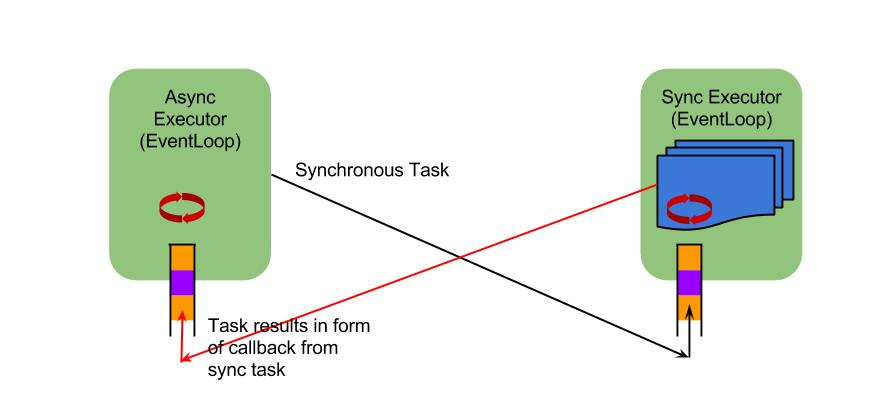
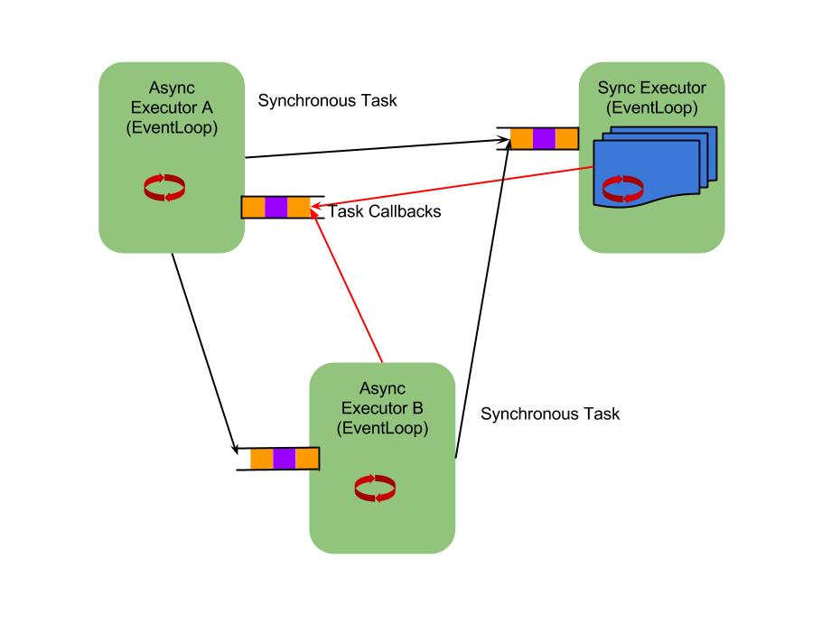
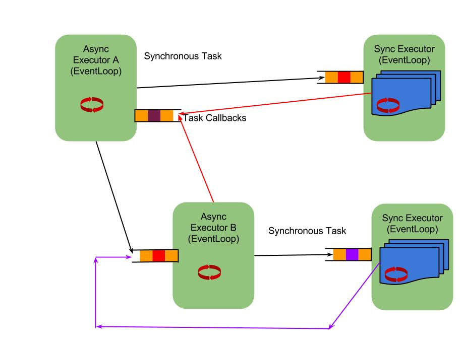

GExecutor
Introduction
GExector provides a C++ library provides a unified way to handle synchronous and asynchronous tasks by abstracting the tasks from underlying thread and process architecture.
In a typical I/O bound application can be implemented via reactor pattern using event loops like libevent or boost::asio. However, it has two limitations
1. Synchronous Apis processing: If application needs to call a synchronous API or processing then it would block the event loop. This would make the application perform badly as it breaks the reactor pattern. Typical strategies are to create threads and send offload tasks to it. However, there is no simple way to handle these tasks in C++.
2. Multi CPU limitation: Typical event loops can only at most use a single CPU effectively. In today's computing environment has lots of CPU available. However, without using concurrent data structures it is not trivial to use reactor pattern and also use multiple CPU without complicating the programming paradigm.
An alternative stragegy is to use multiple threads or process to use better utilize multiple CPUs. However, that can complicate the application design once locks or shared memory based information sharing is used between the different computing blocks. More details on the discussion can be found at C10K Problem.
GExector implements a hybrid event loop based task processing framework that can be used for handling and routing tasks between async event loops and worker threads for handling synchronous tasks.
GExecutor is inspired by Java Executor like SEDA and Twisted for python. It currently uses libevent based event loop for implementation on Linux.
Architecture
GExector design is based on two important elements. Every executor has a task queue that it uses to receive Tasks. Each Task implements a virtual method Execute() that is called by the executor. Tasks contain pointer to the response Queue that can be used by the Task to send back a response to the originating Executor.
A DeferredTask template provides a simpler interface to register three kinds of callbacks
1. Task implementation that is executed on a GExecutor Eg. Worker thread.
2. Callback to be called when task execution is complete on the originating executor.
3. Errback to be called when task execution failed on the originating executor.
Example
Here is example of a simple server based on GExecutor. Please see samples/simple_http_server for full reference:
void print_hello() {
std::cout << "Hello World\n";
}
void print_hello_done() {
std::cout << "Said Hello to the world\n";
}
void print_hello_failed() {
std::cout << "Could not say Hello\n";
}
int main(int argc, const char* argv[]) {
// Creates a GExecutor reactor with default async executor loop
GExecutorService executor_svc(true);
// Creates a pool of synchronous workers that accepts tasks on taskq sync_executor_->taskq();
sync_executor_ = executors_.CreateSyncExecutor("sync", num_sync_workers);
// run the default reactor.
executor_svc.run();
}
void create_sync_task() {
//Example to add print "Hello" Tasks
GExecutorSharedPtr async_executor = executor_svc.gexecutor(
executor_svc.kDefaultExecutorId);
GTaskQSharedPtr taskq = async_executor->taskq();
boost::shared_ptr<DeferredTask<void>> d(
new DeferredTask<void>(taskq, print_hello);
// attach callback when task print_hello was successful
d.set_callback(print_hello_done);
// attach callback when task print_hello failed.
d.set_errback(print_hello_failed);
async_executor->EnQueueTask(d);
}
Here are some of the example reactor paradigms that can be easily implemented using GExecutor
Single Async loop with synchronous worker pools

There is one default async executor and one pool of synch workers. This is perhaps most common option for the I/O bound applications. CPU bound application would either need to break away tasks for workers or create multiple async execution blocks.
Multiple Async loop using single synchronous worker pool
This is useful in the cases like HTTP server needs more than one CPU to just handle the TCP connection accepts. These accepts can be handled in a distributed executors. However, the request can then be sent to a common Executor/thread that is used for implementing the application using reactor design. This mechanism avoids need to use shared memory for sharing information between two threads/processes. 
Multiple Async loop with multiple synchronous worker pools
This is useful in case of using event driven reactor approach to using multiple reactors to implement multi-stage SEDA style processing blocks. They can exchange tasks between them using the GEexecutor interface. In addition each stage can have its own synchronous processing as well. It can be used for having different worker queue lengths for different event processing units. 
Design considerations
One important aspect of the GExecutor interface is that it accepts taskq as a parameter for the async executors. This is because the taskq needs to be created before the Async threads are created. Otherwise the underlying FD and pipe interface used for notifications would not be visible outside the async thread created.
Working with the Code
Requirements
GExecutor is only supported on Linux. There is not much Linux specific implementation other than the fact that I have not had time to make it full platform dependent.
Dependencies
It is uses boost_system, libevent, GTest (unit tests), cmake (build). Script setup.sh can be used for simple installation.
Installation
Linux installation requires following steps:
mkdir build
cd build
cmake ../src
make
sudo make install
make test
Licensing
All the software provided under gexecutor under the MIT License